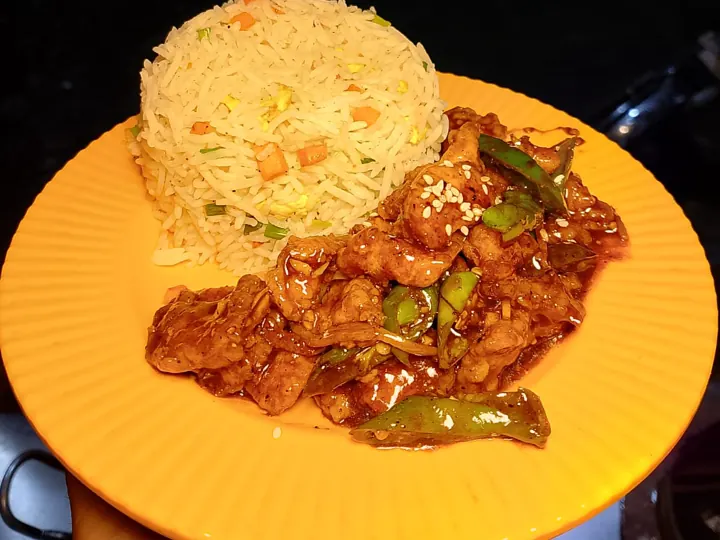

Chicken Manchurian
Chicken Manchurian (supplied image) — Image supplied by the restaurant owner; photographer not specified
User-supplied image; license not specified. Resized and cropped for the menu; compressed to WebP. Both desktop and mobile copies use the supplied image.
Replaced by matching uploaded filename gravy-1-small.jpeg.